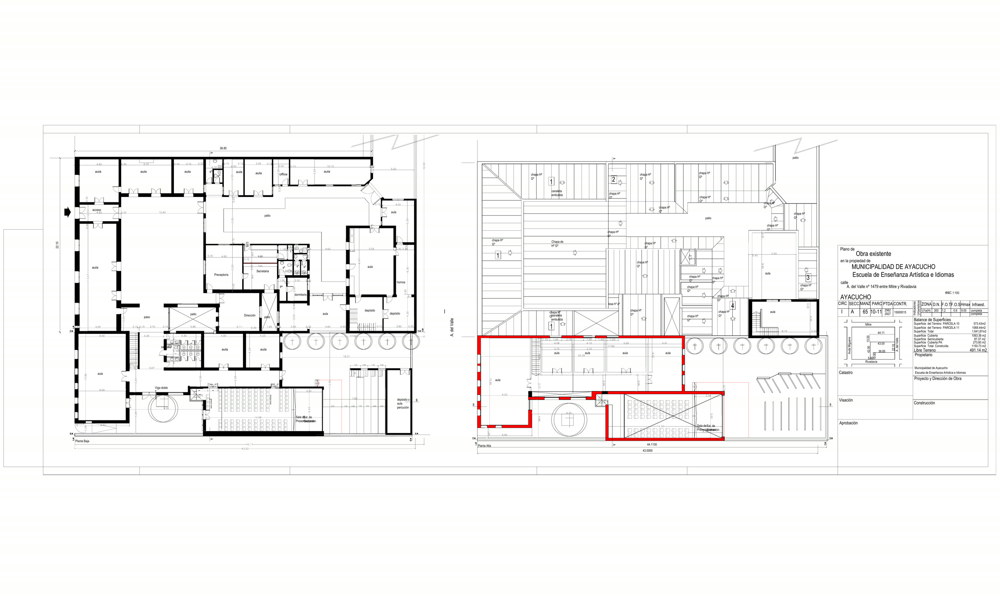

<title>EMEAI · SIGEP 360</title>
<link rel="stylesheet" href="https://fonts.googleapis.com/css2?family=Newsreader:ital,wght@0,300;0,400;0,500;1,400;1,500&family=IBM+Plex+Sans:wght@400;500;600&family=IBM+Plex+Mono:wght@400;500;600&display=swap">
<style>
  :root{
    color-scheme: light;
    --bg:#FAFAF8; --surface:#FFFFFF; --surface-2:#F1F0EC;
    --ink:#161512; --ink-2:#514E46; --ink-muted:#8A867C;
    --border:rgba(22,21,18,.13); --border-soft:rgba(22,21,18,.07);
    --accent:#184F95; --accent-soft:#2a78d6; --accent-wash:#EAF0F9;
    --good:#0ca30c; --warning:#b9820c; --serious:#c1602f; --critical:#b23434;
  }
  @media (prefers-color-scheme: dark){
    :root:not([data-theme="light"]){
      color-scheme: dark;
      --bg:#121210; --surface:#1A1917; --surface-2:#222220;
      --ink:#F5F4F0; --ink-2:#C7C3B8; --ink-muted:#8f8b80;
      --border:rgba(255,255,255,.14); --border-soft:rgba(255,255,255,.08);
      --accent:#86b6ef; --accent-soft:#3987e5; --accent-wash:#182335;
      --good:#3fc23f; --warning:#e0b23e; --serious:#e38a5c; --critical:#e46868;
    }
  }
  :root[data-theme="dark"]{
    color-scheme: dark;
    --bg:#121210; --surface:#1A1917; --surface-2:#222220;
    --ink:#F5F4F0; --ink-2:#C7C3B8; --ink-muted:#8f8b80;
    --border:rgba(255,255,255,.14); --border-soft:rgba(255,255,255,.08);
    --accent:#86b6ef; --accent-soft:#3987e5; --accent-wash:#182335;
    --good:#3fc23f; --warning:#e0b23e; --serious:#e38a5c; --critical:#e46868;
  }

  *{ box-sizing:border-box; }
  html{ scroll-behavior:smooth; }
  body{
    margin:0; background:var(--bg); color:var(--ink); font-family:"IBM Plex Sans",sans-serif; line-height:1.6;
    padding-left:max(20px, env(safe-area-inset-left,0px)); padding-right:max(20px, env(safe-area-inset-right,0px));
  }
  .serif{ font-family:"Newsreader",serif; }
  .mono{ font-family:"IBM Plex Mono",monospace; font-variant-numeric:tabular-nums; }
  img{ max-width:100%; display:block; }
  a{ color:var(--accent); }
  .muted{ color:var(--ink-muted); }
  ::selection{ background:var(--accent); color:#fff; }

  .wrap{ max-width:900px; margin:0 auto; }
  .label{ font-family:"IBM Plex Mono",monospace; font-size:.68rem; letter-spacing:.18em; text-transform:uppercase; color:var(--ink-muted); }

  header.hero{ padding:70px 0 60px; }
  header.hero .label{ margin-bottom:28px; }
  h1.thesis{ font-family:"Newsreader",serif; font-weight:300; font-size:clamp(2.2rem,6vw,3.6rem); line-height:1.1; margin:0; }
  h1.thesis em{ font-style:italic; color:var(--accent); font-weight:400; }
  p.lead{ font-size:1.02rem; color:var(--ink-2); max-width:62ch; margin:22px 0 0; }
  .statline{ margin-top:38px; display:flex; flex-wrap:wrap; gap:0; }
  .statline .s{ padding:0 22px 0 0; margin-right:22px; border-right:1px solid var(--border); }
  .statline .s:last-child{ border-right:none; margin-right:0; }
  .statline .n{ font-family:"Newsreader",serif; font-size:1.5rem; }
  .statline .l{ font-size:.7rem; color:var(--ink-muted); }
  @media (max-width:560px){ .statline .s{ border-right:none; padding:0; margin:0 0 12px; width:100%; } }

  section.chapter{ padding:60px 0; border-top:1px solid var(--border-soft); }
  .chapter-head{ margin-bottom:30px; max-width:70ch; }
  .chapter-head .label{ margin-bottom:12px; }
  .chapter-head h2{ font-family:"Newsreader",serif; font-weight:400; font-size:clamp(1.4rem,3.2vw,1.9rem); margin:0; }
  .chapter-head p{ color:var(--ink-2); margin-top:12px; }

  .reveal{ opacity:0; transform:translateY(14px); transition:opacity .7s ease, transform .7s ease; }
  .reveal.in{ opacity:1; transform:translateY(0); }
  @media (prefers-reduced-motion:reduce){ .reveal{ opacity:1; transform:none; } }

  /* ---- plano ---- */
  .plan-shell{ display:grid; grid-template-columns:1.5fr 1fr; gap:30px; align-items:start; }
  @media (max-width:820px){ .plan-shell{ grid-template-columns:1fr; } }
  .plan-frame{ position:relative; border:1px solid var(--border); }
  .plan-frame img{ width:100%; display:block; }
  .hotspot{
    position:absolute; width:9px; height:9px; margin:-4.5px 0 0 -4.5px; border-radius:50%;
    background:var(--accent); cursor:pointer; box-shadow:0 0 0 3px var(--bg); border:none; padding:0;
  }
  .hotspot.empty{ background:transparent; border:1.5px dashed var(--ink-muted); }
  .hotspot:hover, .hotspot.active{ transform:scale(1.7); }
  .plan-caption{ padding-top:10px; font-size:.76rem; color:var(--ink-muted); }
  .info-panel{ padding-top:2px; min-height:280px; }
  .info-panel .sector-tag{ font-family:"IBM Plex Mono"; font-size:.68rem; text-transform:uppercase; letter-spacing:.1em; color:var(--ink-muted); }
  .info-panel .sector-name{ font-family:"Newsreader",serif; font-size:1.35rem; margin-top:4px; }
  .record{ border-top:1px solid var(--border-soft); padding-top:10px; margin-top:12px; }
  .record .rd{ font-family:"IBM Plex Mono"; font-size:.7rem; color:var(--ink-muted); display:flex; justify-content:space-between; }
  .record .rt{ font-size:.9rem; font-weight:600; margin-top:3px; }
  .record .rp{ font-size:.78rem; color:var(--ink-2); margin-top:2px; }
  .empty-note{ font-size:.86rem; color:var(--ink-2); line-height:1.6; margin-top:14px; border-left:2px solid var(--border); padding-left:14px; }
  .panel-scroll{ max-height:320px; overflow-y:auto; padding-right:4px; }

  /* ---- timeline ---- */
  .timeline{ display:flex; gap:22px; overflow-x:auto; padding-bottom:10px; }
  .era-card{ flex:0 0 auto; width:300px; }
  .era-photos{ display:grid; grid-template-columns:1fr 1fr; gap:3px; }
  .era-photo-wrap{ aspect-ratio:4/3; overflow:hidden; background:var(--surface-2); }
  .era-photo-wrap img{ width:100%; height:100%; object-fit:cover; }
  .era-body{ padding-top:14px; }
  .era-year{ font-family:"IBM Plex Mono"; font-size:.7rem; color:var(--accent); }
  .era-title{ font-family:"Newsreader",serif; font-size:1.15rem; margin-top:2px; }
  .era-text{ font-size:.82rem; color:var(--ink-2); margin-top:6px; line-height:1.5; }
  .era-caption{ font-size:.68rem; color:var(--ink-muted); margin-top:8px; }

  /* ---- historia clinica ---- */
  .table-wrap{ overflow-x:auto; }
  table{ width:100%; border-collapse:collapse; min-width:720px; }
  th{ text-align:left; font-size:.66rem; text-transform:uppercase; letter-spacing:.06em; color:var(--ink-muted); font-weight:600; padding:8px 10px; border-bottom:1px solid var(--border); }
  td{ padding:9px 10px; border-bottom:1px solid var(--border-soft); font-size:.84rem; vertical-align:top; }
  td.monto{ font-family:"IBM Plex Mono"; text-align:right; white-space:nowrap; }
  td.fecha{ font-family:"IBM Plex Mono"; white-space:nowrap; color:var(--ink-2); }
  .sector-pill{ font-size:.68rem; color:var(--ink-muted); }
  .note-box{ margin-top:18px; font-size:.82rem; color:var(--ink-muted); line-height:1.6; max-width:70ch; }

  /* ---- ISE ---- */
  .ise-shell{ display:grid; grid-template-columns:170px 1fr; gap:40px; align-items:start; }
  @media (max-width:640px){ .ise-shell{ grid-template-columns:1fr; } }
  .gauge{ text-align:center; }
  .gauge-num{ font-family:"Newsreader",serif; font-weight:300; font-size:4.2rem; line-height:1; }
  .gauge-band{ font-family:"IBM Plex Mono"; font-size:.7rem; letter-spacing:.08em; text-transform:uppercase; color:var(--ink-muted); margin-top:6px; }
  .gauge-ring{ width:130px; height:130px; margin:0 auto; }
  .ise-row{ display:grid; grid-template-columns:1fr auto; gap:4px 14px; align-items:center; padding:12px 0; border-top:1px solid var(--border-soft); }
  .ise-row .w{ font-size:.66rem; color:var(--ink-muted); font-family:"IBM Plex Mono"; }
  .ise-bar-track{ grid-column:1/-1; height:1px; background:var(--border); position:relative; margin-top:6px; }
  .ise-bar-fill{ position:absolute; left:0; top:-1.5px; height:4px; background:var(--accent); }
  .ise-val{ font-family:"IBM Plex Mono"; text-align:right; }
  .disclaimer{ margin-top:20px; font-size:.78rem; color:var(--ink-muted); border-left:2px solid var(--border); padding-left:14px; line-height:1.6; max-width:70ch; }

  /* ---- BAMUR ---- */
  .bamur-k{ font-family:"Newsreader",serif; font-style:italic; font-size:1.5rem; display:block; margin-bottom:14px; }
  .bamur p{ font-size:1rem; color:var(--ink-2); max-width:66ch; }

  /* ---- trayectoria ---- */
  .chart-grid{ display:grid; grid-template-columns:1.3fr 1fr; gap:40px; }
  @media (max-width:760px){ .chart-grid{ grid-template-columns:1fr; gap:30px; } }
  .chart-sub{ font-size:.76rem; color:var(--ink-muted); margin-bottom:16px; }
  .bars{ display:flex; align-items:flex-end; gap:8px; height:150px; border-bottom:1px solid var(--border); }
  .bar-col{ flex:1; display:flex; flex-direction:column; align-items:center; gap:6px; height:100%; justify-content:flex-end; }
  .bar{ width:100%; background:var(--accent); }
  .bar-label{ font-size:.62rem; font-family:"IBM Plex Mono"; color:var(--ink-muted); margin-top:6px; }
  .bar-val{ font-size:.64rem; font-family:"IBM Plex Mono"; color:var(--ink-2); }
  .modal-row{ display:grid; grid-template-columns:1fr auto; gap:6px 12px; align-items:center; padding:9px 0; border-top:1px solid var(--border-soft); }
  .modal-label{ font-size:.82rem; color:var(--ink-2); }
  .modal-n{ font-family:"IBM Plex Mono"; font-size:.78rem; text-align:right; }
  .modal-track{ grid-column:1/-1; height:1px; background:var(--border); position:relative; margin-top:5px; }
  .modal-fill{ position:absolute; left:0; top:-1.5px; height:4px; }

  .link-line{ font-size:.96rem; margin-top:24px; }
  .link-line a{ text-decoration:underline; text-underline-offset:3px; }

  /* ---- energia ---- */
  .energy-stats{ margin:26px 0 34px; }
  .energy-table td.kwh, .energy-table td.kwp{ font-family:"IBM Plex Mono"; text-align:right; white-space:nowrap; }
  .energy-caveat{ margin-top:18px; font-size:.82rem; color:var(--ink-muted); line-height:1.65; max-width:70ch; border-left:2px solid var(--border); padding-left:14px; }
  .energy-caveat strong{ color:var(--ink-2); }

  footer.pf{ text-align:center; padding:40px 0 60px; color:var(--ink-muted); font-size:.76rem; }
</style>

<header class="hero">
  <div class="wrap">
    <div class="label">SIGEP 360 · caso piloto real — Ayacucho, Buenos Aires</div>
    <h1 class="thesis">EMEAI <em>/</em> Historia Clínica Edilicia</h1>
    <p class="lead">SIGEP 360 (Sistema Inteligente de Gestión del Patrimonio Edilicio Municipal) aplicado a la EMEAI (Escuela Municipal de Enseñanza Artística e Idiomas) — A. del Valle 1479, entre Mitre y Rivadavia. Este plano y esta línea de tiempo se construyeron con material real del archivo municipal: planos de obra, fotografías de 2013 a 2023 y el registro histórico de órdenes de compra de la Jefatura de Obras Públicas.</p>
    <div class="statline">
      <div class="s"><span class="n serif">1.150,73</span><span class="l">m² construidos</span></div>
      <div class="s"><span class="n serif">25</span><span class="l">intervenciones documentadas 2013–2023</span></div>
      <div class="s"><span class="n serif">10</span><span class="l">años de trazabilidad + relevamiento 2026</span></div>
      <div class="s"><span class="n serif">43</span><span class="l">edificios en la base histórica municipal</span></div>
    </div>
  </div>
</header>

<main class="wrap">

  <section class="chapter" id="plano">
    <div class="chapter-head reveal">
      <div class="label">01 — El plano, ahora interactivo</div>
      <h2>Cada sector, con su propia historia.</h2>
      <p>El plano de obra existente (2026) es la base del edificio dentro de SIGEP 360. Tocá un punto para ver qué intervenciones reales quedaron registradas en ese sector — y cuáles no. Esa segunda categoría es tan importante como la primera.</p>
    </div>
    <div class="plan-shell reveal">
      <div>
        <div class="plan-frame">
          
          <div id="hotspotLayer"></div>
        </div>
        <p class="plan-caption">Plano de obra existente, Municipalidad de Ayacucho (2026) · Planta Baja (izquierda) y Planta Alta (derecha). Posición de los puntos, ilustrativa.</p>
      </div>
      <div class="info-panel" id="infoPanel"><!-- filled by JS --></div>
    </div>
  </section>

  <section class="chapter" id="linea-tiempo">
    <div class="chapter-head reveal">
      <div class="label">02 — Línea de tiempo de obra</div>
      <h2>De la escuela original al relevamiento 2026.</h2>
      <p>Fotografías reales del archivo municipal, ordenadas cronológicamente.</p>
    </div>
    <div class="timeline reveal" id="timelineTrack"><!-- filled by JS --></div>
  </section>

  <section class="chapter" id="historia-clinica">
    <div class="chapter-head reveal">
      <div class="label">03 — Historia Clínica Edilicia</div>
      <h2>25 intervenciones reales, extraídas del archivo municipal.</h2>
      <p>Reconstruidas a partir de <span class="mono">OBRAS PUBLICAS trabajos realizados.xlsx</span>, sin editar montos ni fechas. Once registros no tienen fecha de inicio de obra cargada — una laguna real del archivo actual que una Orden de Trabajo digital, con fecha obligatoria, elimina de raíz.</p>
    </div>
    <div class="table-wrap reveal">
      <table>
        <thead><tr><th>Fecha inicio</th><th>Tarea</th><th>Sector</th><th>Proveedor</th><th>Modalidad</th><th>Monto (histórico)</th></tr></thead>
        <tbody id="historiaBody"><!-- filled by JS --></tbody>
      </table>
    </div>
    <div class="note-box">Los montos están en pesos nominales del año de cada intervención, sin ajustar por inflación — sumarlos entre 2013 y 2023 no da una cifra financieramente significativa.</div>
  </section>

  <section class="chapter" id="ise">
    <div class="chapter-head reveal">
      <div class="label">04 — ISE de ejemplo</div>
      <h2>Así se vería el Índice de Salud Edilicia de EMEAI.</h2>
      <p>Cálculo <strong>ilustrativo</strong>, con subíndices construidos a partir de lo que sí sabemos por el archivo y de lo que <strong>no</strong> sabemos (sin relevamiento de instalación eléctrica ni de accesibilidad). El valor real surge de la inspección técnica del "Año 0".</p>
    </div>
    <div class="ise-shell reveal">
      <div class="gauge">
        <svg class="gauge-ring" viewBox="0 0 130 130">
          <circle cx="65" cy="65" r="58" fill="none" stroke="var(--border)" stroke-width="1"/>
          <circle id="gaugeArc" cx="65" cy="65" r="58" fill="none" stroke="var(--accent)" stroke-width="1.5" stroke-linecap="round" transform="rotate(-90 65 65)" stroke-dasharray="364" stroke-dashoffset="364"/>
        </svg>
        <div class="gauge-num serif" id="iseNum" style="margin-top:-92px">—</div>
        <div class="gauge-band" id="iseBand" style="margin-top:46px">—</div>
      </div>
      <div id="iseRows"></div>
    </div>
    <p class="disclaimer">* Simulación con datos de ejemplo. No reemplaza una inspección técnica real — el ISE definitivo de cada uno de los 71 edificios se calcula durante el sprint de diagnóstico "Año 0".</p>
  </section>

  <section class="chapter bamur" id="bamur">
    <div class="chapter-head reveal"><div class="label">05 — BAMUR</div></div>
    <div class="reveal">
      <span class="bamur-k">La pinotea que no se tiró.</span>
      <p>Durante una de las intervenciones sobre el edificio original de la Escuela de Música se recuperó piso de madera de pinotea en buen estado. BAMUR (Banco Municipal de Materiales Recuperados) lo registra con código, cantidad, estado y fotografías — para que dentro de cinco años, en otra obra municipal, alguien pueda encontrarlo y reutilizarlo en vez de comprar madera nueva. Economía circular aplicada a la gestión municipal, y EMEAI ya tiene un caso real para demostrarlo.</p>
    </div>
  </section>

  <section class="chapter" id="trayectoria">
    <div class="chapter-head reveal">
      <div class="label">06 — Trayectoria institucional</div>
      <h2>EMEAI es un caso, no el único.</h2>
      <p>El mismo archivo que documenta EMEAI registra obras en 43 edificios y espacios municipales distintos desde 2013 — la prueba de que Obras Públicas ya viene sosteniendo un volumen de gestión considerable. SIGEP 360 lo ordena, no lo inventa.</p>
    </div>
    <div class="chart-grid reveal">
      <div>
        <div class="chapter-head" style="margin-bottom:0"><h2 style="font-size:1.05rem">Obras iniciadas por año</h2></div>
        <div class="chart-sub">Todos los edificios municipales, 2013–2023</div>
        <div class="bars" id="barsChart"></div>
      </div>
      <div>
        <div class="chapter-head" style="margin-bottom:0"><h2 style="font-size:1.05rem">Por modalidad de contratación</h2></div>
        <div class="chart-sub">233 registros con modalidad identificada</div>
        <div id="modalidadChart"></div>
      </div>
    </div>
  </section>

  <section class="chapter" id="energia">
    <div class="chapter-head reveal">
      <div class="label">07 — Plan de sustentabilidad energética</div>
      <h2>Un año completo de boletas reales, no una sola estación.</h2>
      <p>23 boletas de EDEA (Empresa Distribuidora de Energía Atlántica) descargadas de la Oficina Virtual, más la ya digitalizada antes — <strong>8 bimestres consecutivos por cuenta, del 31/03/2025 al 31/07/2026 (16 meses, sin huecos)</strong>. Alimenta la mejora <strong>SIGEP Verde</strong> del plan con datos reales, no una extrapolación de un solo período.</p>
    </div>
    <div class="energy-stats statline reveal">
      <div class="s"><span class="n serif">≈23.850</span><span class="l">kWh/año real, complejo completo</span></div>
      <div class="s"><span class="n serif">≈17</span><span class="l">kWp recomendados (~37 paneles)</span></div>
      <div class="s"><span class="n serif">≈$10,1M</span><span class="l">ARS/año a tarifas vigentes (ago. 2026)</span></div>
    </div>

    <h3 class="sub" style="font-family:'Newsreader',serif; font-size:1.15rem; margin:26px 0 10px; font-weight:500;">Consumo por bimestre, complejo completo</h3>
    <p class="chart-sub" style="font-size:.8rem;color:var(--ink-muted);margin-bottom:12px;">Los dos bimestres de verano (receso escolar) son sistemáticamente los de menor consumo — justo cuando hay más sol.</p>
    <div class="bars reveal" id="energiaChart" style="max-width:620px"></div>

    <h3 class="sub" style="font-family:'Newsreader',serif; font-size:1.15rem; margin:30px 0 10px; font-weight:500;">Dimensionamiento por edificio</h3>
    <div class="table-wrap reveal">
      <table class="energy-table">
        <thead><tr><th>Edificio</th><th>Domicilio</th><th>kWh/año real</th><th>Potencia sugerida (85%, recomendado)</th></tr></thead>
        <tbody>
          <tr><td class="mono">A</td><td>Rivadavia 1233</td><td class="kwh">15.257 kWh</td><td class="kwp">≈10,8 kWp</td></tr>
          <tr><td class="mono">B</td><td>Aristóbulo del Valle 1443</td><td class="kwh">5.226 kWh</td><td class="kwp">≈3,7 kWp</td></tr>
          <tr><td class="mono">C</td><td>Aristóbulo del Valle 1467</td><td class="kwh">3.368 kWh</td><td class="kwp">≈2,4 kWp</td></tr>
        </tbody>
      </table>
    </div>

    <div class="energy-caveat reveal">
      <strong>Por qué al 85% y no al 100%:</strong> un sistema dimensionado para cubrir todo el consumo anual promedio genera un excedente considerable en verano, justo cuando el edificio está de receso y no puede autoconsumirlo. Ese excedente sólo tiene valor económico si EMEAI se da de alta en Generación Distribuida (Ley 27.424, con adhesión provincial) y EDEA compensa la energía inyectada a buen precio — a confirmar antes de cerrar el dimensionamiento final. Al 85% (≈17 kWp combinados, ~37 paneles de 450 Wp, ~97 m² de techo) se prioriza el autoconsumo real por sobre la cobertura nominal. Inversión de referencia: <strong>USD 15.300–20.400</strong> (rango de mercado, USD 900–1.200/kWp instalado; no convertido a pesos por la volatilidad cambiaria).
    </div>
    <div class="energy-caveat reveal" style="margin-top:12px">
      <strong>Corrección respecto del cálculo anterior:</strong> con un solo bimestre de invierno, la extrapolación daba ≈29.800 kWh/año — un 25% más que el dato real (23.850 kWh/año), y el edificio B parecía tener una oportunidad de corrección de factor de potencia. Con el año completo, el factor de potencia estimado (cos φ ≈ 0,96) resulta aceptable — se retira esa recomendación. Con más datos, el proyecto se dimensiona mejor y más barato.
    </div>
    <p class="link-line"><a href="../../dossier/" target="_blank" rel="noopener">Leer el dossier completo del proyecto →</a></p>
  </section>

</main>

<footer class="pf">SIGEP 360 · Sistema Inteligente de Gestión del Patrimonio Edilicio Municipal.<br>Construido con datos y fotografías reales del archivo de Obras Públicas de la Municipalidad de Ayacucho.</footer>

<script>
window.__EMEAI_DATA__ = {
  hotspots: [
    { label:"Aulas (frente, PB)", zone:"Planta Baja", x:18.3, y:28.8, sectors:["carpinterias","pintura","cielorrasos"] },
    { label:"Dirección", zone:"Planta Baja", x:19.5, y:53.8, sectors:[] },
    { label:"Secretaría / Preceptoría", zone:"Planta Baja", x:23.8, y:45.4, sectors:[] },
    { label:"Depósitos", zone:"Planta Baja", x:38.5, y:53.8, sectors:["depositos"] },
    { label:"Sala de Presentaciones (percusión)", zone:"Planta Baja", x:28.0, y:70.8, sectors:[] },
    { label:"Patio central", zone:"Planta Baja / Alta", x:27.3, y:35.8, sectors:["climatizacion","fachadas","pisos"] },
    { label:"Cubierta / techos", zone:"Planta Alta", x:57.5, y:33.3, sectors:["cubierta"] },
    { label:"Aulas (planta alta)", zone:"Planta Alta", x:61.5, y:60.8, sectors:["cielorrasos"] },
    { label:"Sala de Estudio de Presentación", zone:"Planta Alta · ampliación", x:66.5, y:66.7, sectors:["ampliacion"] },
    { label:"Canaleta embutida", zone:"Planta Alta", x:50.5, y:28.8, sectors:["cubierta"] }
  ],
  eras: [
    { range:"2013–2014", title:"Edificio original", text:"Escuela de Música antes de la obra nueva: aulas y estructura original, con patologías ya visibles de humedad y cubierta.", photos:[
      {src:"timeline/e1-1.jpg", caption:"Techo de chapa corrugada oxidada, estado del edificio original (2013)."},
      {src:"timeline/e1-2.jpg", caption:"Grieta y humedad en cielorraso de un aula."},
      {src:"timeline/e1-3.jpg", caption:"Escalera de madera hacia el entretecho del edificio original."},
      {src:"timeline/e1-4.jpg", caption:"Techo y pared exterior agrietados, cableado aéreo."}
    ]},
    { range:"2014–2017", title:"Construcción del edificio nuevo", text:"Obra nueva sobre el predio de A. del Valle 1479. En esta etapa se documentó la recuperación de piso de pinotea (caso BAMUR).", photos:[
      {src:"timeline/e2-1.jpg", caption:"Fachada del edificio original con el cartel de la EMEAI, previo a la obra nueva."},
      {src:"timeline/e2-2.jpg", caption:"Vista panorámica del techo de chapa oxidada del edificio antiguo."},
      {src:"timeline/e2-3.jpg", caption:"Interior con muros de ladrillo visto y estructura de acero."},
      {src:"timeline/e2-4.jpg", caption:"Instalación de aislación térmica bajo la nueva cubierta metálica."}
    ]},
    { range:"2015–2016", title:"Etapa 1 y 2 de ampliación", text:"Primeras dos etapas de ampliación: expediente 5329/15, obra de Campos Jara, Máximo y Didio Carlos José (carpinterías).", photos:[
      {src:"timeline/e3-1.jpg", caption:"Demolición de la construcción trasera — inicio de la 1° Etapa."},
      {src:"timeline/e3-2.jpg", caption:"Losa nueva de hormigón recién colada, vigas a la vista."},
      {src:"timeline/e3-3.jpg", caption:"Muros de ladrillo en elevación, trabajador sobre la estructura."},
      {src:"timeline/e3-4.jpg", caption:"Puerta doble antigua con vidrio verde, conservada durante la obra."}
    ]},
    { range:"2016–2017", title:"Etapa 3 y 4 de ampliación", text:"Ampliación mayor a cargo de Barrios Salvador y Zubieta Matías — las dos intervenciones de mayor monto histórico del edificio.", photos:[
      {src:"timeline/e4-1.jpg", caption:"Muro nuevo de ladrillo con vanos del edificio original conservados."},
      {src:"timeline/e4-2.jpg", caption:"Esquina de ladrillo visto con malla de hierro para la losa nueva."},
      {src:"timeline/e4-3.jpg", caption:"La ampliación de ladrillo se eleva sobre la cubierta de tejas original."},
      {src:"timeline/e4-4.jpg", caption:"Patio interior con aberturas nuevas, al cierre de la 4° Etapa."}
    ]},
    { range:"2020–2022", title:"Refacciones recientes", text:"Cambio de cubierta, climatización, pisos y sanitarios, pintura y carpinterías — la etapa mejor documentada del archivo.", photos:[
      {src:"timeline/e5-1.jpg", caption:"Nueva cubierta de chapa sobre parapeto de hormigón (2020)."},
      {src:"timeline/e5-2.jpg", caption:"Operarios instalando ventanas en muros de durlock."},
      {src:"timeline/e5-3.jpg", caption:"Azotea con cubierta corrugada nueva y parapetos de hormigón."},
      {src:"timeline/e5-4.jpg", caption:"Salón con conductos de aire acondicionado — climatización 2021-2022."}
    ]},
    { range:"Set. 2026", title:"Relevamiento SIGEP 360", text:"Recorrida técnica en video para levantar el estado actual del edificio — con patologías activas y usos vigentes.", photos:[
      {src:"timeline/e6-1.jpg", caption:"Fachada actual, hormigón visto y ventanas de aluminio."},
      {src:"timeline/e6-2.jpg", caption:"Desprendimiento de revoque por humedad — patología activa detectada."},
      {src:"timeline/e6-3.jpg", caption:"Sala con batería de percusión: uso actual como aula de percusión."},
      {src:"timeline/e6-4.jpg", caption:"Taller de cerámica con piezas de alumnos, uso artístico vigente."}
    ]}
  ],
  porAnio: {"2013":11,"2014":9,"2015":11,"2016":9,"2017":25,"2018":30,"2019":19,"2020":5,"2021":13,"2022":22,"2023":15},
  energiaBimestres: [
    {periodo:"03/25", kwh:3479}, {periodo:"04/25", kwh:4465}, {periodo:"05/25", kwh:5463}, {periodo:"06/25", kwh:5320},
    {periodo:"01/26", kwh:1449}, {periodo:"02/26", kwh:1136}, {periodo:"03/26", kwh:5288}, {periodo:"04/26", kwh:5223}
  ],
  porModalidad: {"Compra Directa":149,"Concurso de Precios":55,"Licitación Privada":22,"Licitación Pública":1,"Otra modalidad":6},
  iseDemo: {
    items: [
      { label:"Estructura", weight:20, score:78 },
      { label:"Cubiertas", weight:15, score:65 },
      { label:"Instalación eléctrica", weight:15, score:60 },
      { label:"Sanitarias", weight:10, score:85 },
      { label:"Gas / climatización", weight:10, score:88 },
      { label:"Fachadas / revoques", weight:10, score:70 },
      { label:"Accesibilidad / seguridad", weight:10, score:55 },
      { label:"Carpinterías", weight:5, score:75 },
      { label:"Mantenimiento general", weight:5, score:72 }
    ]
  },
  obras: [
    { inicioObra:"2013-05-06", descripcionTareas:"Reparación Cubierta", monto:136980, proveedor:"Barrios Salvador", modalidad:"Concurso 27/13", sector:"cubierta" },
    { inicioObra:"2013-09-13", descripcionTareas:"Ampliación concurso 27/13", monto:2250, proveedor:"Barrios Salvador", modalidad:"Compra Directa", sector:"cubierta" },
    { inicioObra:"2015-11-10", descripcionTareas:"MdO (Mano de Obra) y Mat (Materiales) — 1° Etapa", monto:280000, proveedor:"Campos Jara, Máximo", modalidad:"Lic. Privada 19/15", sector:"ampliacion" },
    { inicioObra:"2016-03-03", descripcionTareas:"Adicionales Lic. Priv. 19/15", monto:30518.16, proveedor:"Campos Jara, Máximo", modalidad:"Compra Directa", sector:"ampliacion" },
    { inicioObra:"2016-04-04", descripcionTareas:"MdO y Mat 2° Etapa", monto:230000, proveedor:"Campos Jara, Máximo", modalidad:"Concurso 19/16", sector:"ampliacion" },
    { inicioObra:"2016-05-09", descripcionTareas:"Provisión y colocación de carpintería", monto:98698, proveedor:"Didio Carlos José", modalidad:"Concurso 36/16", sector:"carpinterias" },
    { inicioObra:"2016-07-28", descripcionTareas:"Ejecución de carpeta en depósito", monto:14600, proveedor:"Campos Jara, Máximo", modalidad:"Compra Directa", sector:"depositos" },
    { inicioObra:"2016-09-05", descripcionTareas:"MdO y Mat 3° Etapa", monto:504900, proveedor:"Barrios Salvador", modalidad:"Lic. Priv. 20/16", sector:"ampliacion" },
    { inicioObra:"2017-01-05", descripcionTareas:"MdO y Mat 4° Etapa", monto:687474.14, proveedor:"Zubieta Matías", modalidad:"Lic. Priv. 40/16", sector:"ampliacion" },
    { inicioObra:"2017-02-24", descripcionTareas:"Adicionales Lic. Priv. 20/16", monto:30618.99, proveedor:"Barrios Salvador", modalidad:"Compra Directa", sector:"ampliacion" },
    { inicioObra:"2020-03-05", descripcionTareas:"Cambio de cubierta y división en depósito", monto:119000, proveedor:"Barrios Salvador", modalidad:"Compra Directa", sector:"cubierta" },
    { inicioObra:"2022-04-13", descripcionTareas:"Conductos de calefacción", monto:2608988, proveedor:"Escala Climática", modalidad:"Compra Directa", sector:"climatizacion" },
    { inicioObra:"2022-05-06", descripcionTareas:"Adicional conductos de calefacción", monto:270526, proveedor:"Escala Climática", modalidad:"Compra Directa", sector:"climatizacion" },
    { inicioObra:"2023-03-15", descripcionTareas:"Cajón y revestimiento de muro", monto:268000, proveedor:"Díaz Ricardo Adolfo", modalidad:"Compra Directa", sector:"fachadas" },
    { inicioObra:"2023-03-17", descripcionTareas:"Piso y zócalos de escalera y baños", monto:172000, proveedor:"Nelson Arnaldo Pereira", modalidad:"Compra Directa", sector:"sanitarios" },
    { inicioObra:"2023-05-15", descripcionTareas:"Pintura planta baja", monto:628000, proveedor:"Martiarena Pedro", modalidad:"Concurso 40/23", sector:"pintura" },
    { inicioObra:"2023-07-03", descripcionTareas:"Colocación de vidrios", monto:198490, proveedor:"Iriarte Daoiz Alberto", modalidad:"Compra Directa", sector:"carpinterias" },
    { inicioObra:"2023-07-06", descripcionTareas:"Box de baños", monto:1130000, proveedor:"Díaz Ricardo Adolfo", modalidad:"Compra Directa", sector:"sanitarios" },
    { inicioObra:"", descripcionTareas:"Emplacado de cielorraso y muros en aula", monto:115000, proveedor:"Emiliano Cáceres", modalidad:"Concurso 15/21", sector:"cielorrasos" },
    { inicioObra:"", descripcionTareas:"Baldosas cerámicas de patio", monto:15000, proveedor:"Maselo Diego Oscar", modalidad:"Compra Directa", sector:"pisos" },
    { inicioObra:"", descripcionTareas:"Materiales de albañilería", monto:33770.84, proveedor:"Suárez Corralón", modalidad:"Compra Directa", sector:"general" },
    { inicioObra:"", descripcionTareas:"Materiales cielorraso aula", monto:31984, proveedor:"Ayagranos", modalidad:"Concurso 23/21", sector:"cielorrasos" },
    { inicioObra:"", descripcionTareas:"Materiales cielorraso aula", monto:68876.39, proveedor:"Didio Carlos José", modalidad:"Concurso 23/21", sector:"cielorrasos" },
    { inicioObra:"", descripcionTareas:"Materiales cielorraso aula", monto:37825, proveedor:"Penta Comercial", modalidad:"Concurso 23/21", sector:"cielorrasos" },
    { inicioObra:"", descripcionTareas:"Babetas de patio", monto:38000, proveedor:"Julián Burgos", modalidad:"2 presupuestos", sector:"pisos" }
  ]
};
</script>
<script>
(function(){
  var DATA = window.__EMEAI_DATA__;
  var SECTOR_LABELS = {
    cubierta:'Cubierta / techos', ampliacion:'Ampliación', carpinterias:'Carpinterías',
    depositos:'Depósitos', climatizacion:'Climatización', fachadas:'Fachadas / muros',
    sanitarios:'Sanitarios', cielorrasos:'Cielorrasos', pisos:'Pisos / patio', pintura:'Pintura', general:'General'
  };

  var io = new IntersectionObserver(function(entries){ entries.forEach(function(e){ if(e.isIntersecting) e.target.classList.add('in'); }); }, {threshold:.1});
  document.querySelectorAll('.reveal').forEach(function(el){ io.observe(el); });

  function money(n){ return '$' + Math.round(n).toLocaleString('es-AR'); }
  function fecha(s){ return s ? s.split('-').reverse().join('/') : 's/f'; }

  // ---------- Hotspots ----------
  var layer = document.getElementById('hotspotLayer');
  var panel = document.getElementById('infoPanel');
  layer.style.position='absolute'; layer.style.inset='0';
  document.getElementById('planImg').parentElement.style.position='relative';

  function recordsFor(sectors){
    return DATA.obras.filter(function(o){ return sectors.indexOf(o.sector) !== -1; });
  }

  function renderPanel(hs){
    var recs = recordsFor(hs.sectors);
    var html = '<span class="sector-tag">' + (hs.zone||'') + '</span>' +
      '<div class="sector-name serif">' + hs.label + '</div>';
    if(recs.length === 0){
      html += '<div class="empty-note">Sin intervenciones registradas en el archivo histórico para este sector. No significa que nunca hubo trabajos — significa que no quedaron documentados. Ese vacío es exactamente el problema que la Historia Clínica Edilicia resuelve hacia adelante.</div>';
    } else {
      html += '<div class="panel-scroll">' + recs.map(function(r){
        return '<div class="record"><div class="rd"><span>' + fecha(r.inicioObra) + '</span><span>' + money(r.monto) + '</span></div>' +
          '<div class="rt">' + r.descripcionTareas + '</div>' +
          '<div class="rp">' + r.proveedor + ' · ' + r.modalidad + '</div></div>';
      }).join('') + '</div>';
    }
    panel.innerHTML = html;
  }

  (DATA.hotspots||[]).forEach(function(hs, i){
    var el = document.createElement('button');
    var recs = recordsFor(hs.sectors);
    el.className = 'hotspot' + (recs.length===0 ? ' empty' : '');
    el.style.left = hs.x + '%'; el.style.top = hs.y + '%';
    el.setAttribute('aria-label', hs.label);
    el.addEventListener('click', function(){
      document.querySelectorAll('.hotspot').forEach(function(h){ h.classList.remove('active'); });
      el.classList.add('active');
      renderPanel(hs);
    });
    layer.appendChild(el);
  });
  if(DATA.hotspots && DATA.hotspots.length){
    document.querySelector('.hotspot').classList.add('active');
    renderPanel(DATA.hotspots[0]);
  }

  // ---------- Timeline ----------
  var track = document.getElementById('timelineTrack');
  track.innerHTML = (DATA.eras||[]).map(function(e){
    var photos = e.photos||[];
    var grid = '<div class="era-photos">' + photos.map(function(p){
      return '<div class="era-photo-wrap"></div>';
    }).join('') + '</div>';
    return '<div class="era-card">' + grid +
      '<div class="era-body"><div class="era-year mono">' + e.range + '</div>' +
      '<div class="era-title">' + e.title + '</div>' +
      '<div class="era-text">' + e.text + '</div>' +
      (photos[0] ? '<div class="era-caption">' + photos[0].caption + '</div>' : '') +
      '</div></div>';
  }).join('');

  // ---------- Historia clinica table ----------
  var body = document.getElementById('historiaBody');
  var sorted = DATA.obras.slice().sort(function(a,b){
    return (a.inicioObra||'9999').localeCompare(b.inicioObra||'9999');
  });
  body.innerHTML = sorted.map(function(r){
    return '<tr><td class="fecha">' + (r.inicioObra? fecha(r.inicioObra): '<span class="muted">s/dato</span>') + '</td>' +
      '<td>' + r.descripcionTareas + '</td>' +
      '<td><span class="sector-pill">' + (SECTOR_LABELS[r.sector]||'General') + '</span></td>' +
      '<td>' + r.proveedor + '</td>' +
      '<td class="muted">' + r.modalidad + '</td>' +
      '<td class="monto">' + money(r.monto) + '</td></tr>';
  }).join('');

  // ---------- ISE demo ----------
  var ise = DATA.iseDemo;
  var weighted = 0;
  ise.items.forEach(function(it){ weighted += it.score * it.weight / 100; });
  weighted = Math.round(weighted);
  var band = weighted>=80?['BUENO','good']:weighted>=60?['ATENCIÓN','warning']:weighted>=40?['PRIORITARIO','serious']:['CRÍTICO','critical'];
  document.getElementById('iseNum').textContent = weighted;
  document.getElementById('iseBand').textContent = band[0];
  var color = getComputedStyle(document.documentElement).getPropertyValue('--'+band[1]).trim();
  var gaugeArc = document.getElementById('gaugeArc');
  var CIRC = 364;
  gaugeArc.setAttribute('stroke', color);
  gaugeArc.setAttribute('stroke-dashoffset', CIRC - (CIRC*weighted/100));
  document.getElementById('iseRows').innerHTML = ise.items.map(function(it){
    return '<div class="ise-row"><span>' + it.label + ' <span class="w">peso ' + it.weight + '%</span></span>' +
      '<span class="ise-val">' + it.score + '</span>' +
      '<span class="ise-bar-track"><span class="ise-bar-fill" style="width:' + it.score + '%"></span></span></div>';
  }).join('');

  // ---------- Obras por año chart ----------
  var years = Object.keys(DATA.porAnio).sort();
  var max = Math.max.apply(null, years.map(function(y){ return DATA.porAnio[y]; }));
  document.getElementById('barsChart').innerHTML = years.map(function(y){
    var v = DATA.porAnio[y];
    var h = Math.max(4, Math.round((v/max)*140));
    return '<div class="bar-col"><span class="bar-val">' + v + '</span>' +
      '<div class="bar" style="height:' + h + 'px" title="' + y + ': ' + v + ' obras"></div>' +
      '<span class="bar-label">' + y.slice(2) + '</span></div>';
  }).join('');

  // ---------- Energia por bimestre chart ----------
  var eBim = DATA.energiaBimestres || [];
  var eMax = Math.max.apply(null, eBim.map(function(b){ return b.kwh; }));
  document.getElementById('energiaChart').innerHTML = eBim.map(function(b){
    var h = Math.max(4, Math.round((b.kwh/eMax)*140));
    var verano = (b.periodo === '01/26' || b.periodo === '02/26');
    return '<div class="bar-col"><span class="bar-val">' + b.kwh.toLocaleString('es-AR') + '</span>' +
      '<div class="bar" style="height:' + h + 'px;' + (verano ? 'background:var(--accent-soft);opacity:.55' : '') + '" title="' + b.periodo + ': ' + b.kwh + ' kWh' + (verano ? ' (receso de verano)' : '') + '"></div>' +
      '<span class="bar-label">' + b.periodo + '</span></div>';
  }).join('');

  // ---------- Modalidad chart ----------
  var palette = ['#184F95','#2a78d6','#6da7ec','#9ec5f4','#cde2fb'];
  var mod = DATA.porModalidad;
  var modKeys = Object.keys(mod).sort(function(a,b){ return mod[b]-mod[a]; });
  var modMax = Math.max.apply(null, modKeys.map(function(k){ return mod[k]; }));
  document.getElementById('modalidadChart').innerHTML = modKeys.map(function(k, i){
    var v = mod[k]; var w = Math.round((v/modMax)*100);
    return '<div class="modal-row"><span class="modal-label">' + k + '</span>' +
      '<span class="modal-n">' + v + '</span>' +
      '<span class="modal-track"><span class="modal-fill" style="width:'+w+'%;background:'+palette[i%palette.length]+'"></span></span></div>';
  }).join('');
})();
</script>
